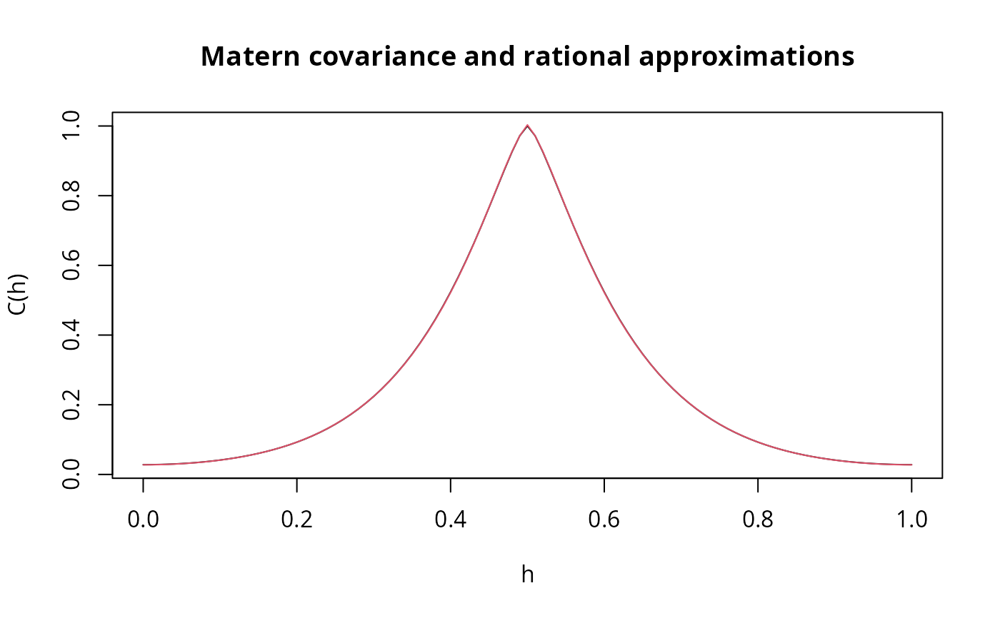
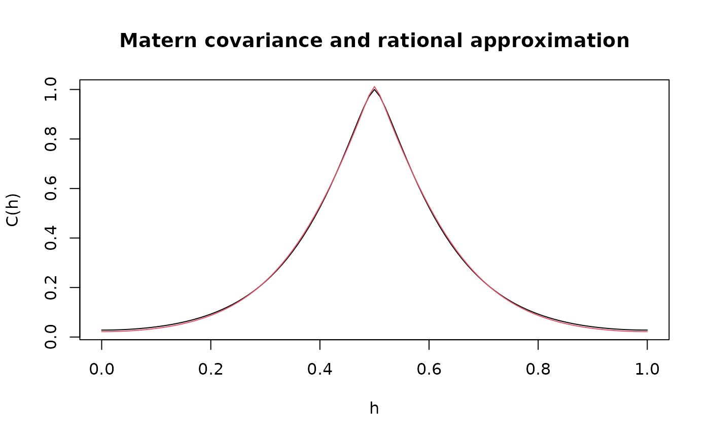

Rational approximations of stationary Gaussian Matern random fields
Source:R/fractional.operators.R
matern.operators.Rdmatern.operators is used for computing a rational SPDE approximation
of a stationary Gaussian random fields on \(R^d\) with a Matern covariance
function
$$C(h) = \frac{\sigma^2}{2^{\nu-1}\Gamma(\nu)}
(\kappa h)^\nu K_\nu(\kappa h)$$
Usage
matern.operators(
kappa = NULL,
tau = NULL,
alpha = NULL,
sigma = NULL,
range = NULL,
nu = NULL,
G = NULL,
C = NULL,
d = NULL,
mesh = NULL,
graph = NULL,
range_mesh = NULL,
loc_mesh = NULL,
m = 1,
type = c("covariance", "operator"),
parameterization = c("spde", "matern"),
compute_higher_order = FALSE,
return_block_list = FALSE,
type_rational_approximation = c("chebfun", "brasil", "chebfunLB"),
fem_mesh_matrices = NULL,
compute_logdet = FALSE
)Arguments
- kappa
Parameter kappa of the SPDE representation. If
NULL, the range parameter will be used. If the range is alsoNULL, a starting value based on the mesh will be supplied.- tau
Parameter tau of the SPDE representation. If both sigma and tau are
NULL, a starting value based on the mesh will be supplied.- alpha
Parameter alpha of the SPDE representation. If
alphaisNULL, a starting value will be supplied.- sigma
Standard deviation of the covariance function. Used if
parameterizationismatern. IfNULL, tau will be used. If tau is alsoNULL, a starting value based on the mesh will be supplied.- range
Range parameter of the covariance function. Used if
parameterizationismatern. If range isNULL, a starting value based on the mesh will be supplied.- nu
Shape parameter of the covariance function. Used if
parameterizationismatern. IfNULL, a starting value will be supplied.- G
The stiffness matrix of a finite element discretization of the domain of interest. Does not need to be given if either
meshorgraphis supplied.- C
The mass matrix of a finite element discretization of the domain of interest. Does not need to be given if either
meshorgraphis supplied.- d
The dimension of the domain. Does not need to be given if either
meshorgraphis provided.- mesh
An optional fmesher mesh. Replaces
d,CandG.- graph
An optional
metric_graphobject. Replacesd,CandG.- range_mesh
The range of the mesh. Will be used to provide starting values for the parameters. Will be used if
meshandgraphareNULL, and if one of the parameters (kappa or tau for spde parameterization, or sigma or range for matern parameterization) are not provided.- loc_mesh
The mesh locations used to construct the matrices C and G. This option should be provided if one wants to use the
rspde_lme()function and will not provide neither graph nor mesh. Only works for 1d data. Does not work for metric graphs. For metric graphs you should supply the graph using thegraphargument.- m
The order of the rational approximation, which needs to be a positive integer. The default value is 1.
- type
The type of the rational approximation. The options are "covariance" and "operator". The default is "covariance".
- parameterization
Which parameterization to use?
maternuses range, std. deviation and nu (smoothness).spdeuses kappa, tau and alpha. The default isspde.- compute_higher_order
Logical. Should the higher order finite element matrices be computed?
- return_block_list
Logical. For
type = "covariance", should the block parts of the precision matrix be returned separately as a list?- type_rational_approximation
Which type of rational approximation should be used? The current types are "chebfun", "brasil" or "chebfunLB".
- fem_mesh_matrices
A list containing FEM-related matrices. The list should contain elements c0, g1, g2, g3, etc.
- compute_logdet
Should log determinants be computed while building the model? (For covariance-based models)
Value
If type is "covariance", then matern.operators
returns an object of class "CBrSPDEobj".
This object is a list containing the
following quantities:
- C
The mass lumped mass matrix.
- Ci
The inverse of
C.- GCi
The stiffness matrix G times
Ci- Gk
The stiffness matrix G along with the higher-order FEM-related matrices G2, G3, etc.
- fem_mesh_matrices
A list containing the mass lumped mass matrix, the stiffness matrix and the higher-order FEM-related matrices.
- m
The order of the rational approximation.
- alpha
The fractional power of the precision operator.
- type
String indicating the type of approximation.
- d
The dimension of the domain.
- nu
Shape parameter of the covariance function.
- kappa
Range parameter of the covariance function
- tau
Scale parameter of the covariance function.
- sigma
Standard deviation of the covariance function.
- type
String indicating the type of approximation.
If type is "operator", then matern.operators
returns an object of class "rSPDEobj". This object contains the
quantities listed in the output of fractional.operators(),
the G matrix, the dimension of the domain, as well as the
parameters of the covariance function.
Details
If type is "covariance", we use the
covariance-based rational approximation of the fractional operator.
In the SPDE approach, we model \(u\) as the solution of the following SPDE:
$$L^{\alpha/2}(\tau u) = \mathcal{W},$$
where
\(L = -\Delta +\kappa^2 I\) and \(\mathcal{W}\) is the standard
Gaussian white noise. The covariance operator of \(u\) is given
by \(L^{-\alpha}\). Now, let \(L_h\) be a finite-element
approximation of \(L\). We can use
a rational approximation of order \(m\) on \(L_h^{-\alpha}\) to
obtain the following approximation:
$$L_{h,m}^{-\alpha} = L_h^{-m_\alpha} p(L_h^{-1})q(L_h^{-1})^{-1},$$
where \(m_\alpha = \lfloor \alpha\rfloor\), \(p\) and \(q\) are
polynomials arising from such rational approximation.
From this approximation we construct an approximate precision
matrix for \(u\).
If type is "operator", the approximation is based on a
rational approximation of the fractional operator
\((\kappa^2 -\Delta)^\beta\), where \(\beta = (\nu + d/2)/2\).
This results in an approximate model of the form $$P_l u(s) = P_r W,$$
where \(P_j = p_j(L)\) are non-fractional operators defined in terms
of polynomials \(p_j\) for \(j=l,r\). The order of \(p_r\) is given
by m and the order of \(p_l\) is \(m + m_\beta\)
where \(m_\beta\) is the integer part of \(\beta\) if \(\beta>1\) and
\(m_\beta = 1\) otherwise.
The discrete approximation can be written as \(u = P_r x\) where
\(x \sim N(0,Q^{-1})\) and \(Q = P_l^T C^{-1} P_l\).
Note that the matrices \(P_r\) and \(Q\) may be be
ill-conditioned for \(m>1\). In this case, the methods in
operator.operations() should be used for operations involving
the matrices, since these methods are more numerically stable.
See also
fractional.operators(),
spde.matern.operators(),
matern.operators()
Examples
# Compute the covariance-based rational approximation of a
# Gaussian process with a Matern covariance function on R
kappa <- 10
sigma <- 1
nu <- 0.8
range <- sqrt(8 * nu) / kappa
# create mass and stiffness matrices for a FEM discretization
nobs <- 101
x <- seq(from = 0, to = 1, length.out = 101)
fem <- rSPDE.fem1d(x)
# compute rational approximation of covariance function at 0.5
op_cov <- matern.operators(
loc_mesh = x, nu = nu,
range = range, sigma = sigma, d = 1, m = 2,
parameterization = "matern"
)
v <- t(rSPDE.A1d(x, 0.5))
# Compute the precision matrix
Q <- op_cov$Q
# A matrix here is the identity matrix
A <- Diagonal(nobs)
# We need to concatenate 3 A's since we are doing a covariance-based rational
# approximation of order 2
Abar <- cbind(A, A, A)
w <- rbind(v, v, v)
# The approximate covariance function:
c_cov.approx <- (Abar) %*% solve(Q, w)
c.true <- folded.matern.covariance.1d(
rep(0.5, length(x)),
abs(x), kappa, nu, sigma
)
# plot the result and compare with the true Matern covariance
plot(x, c.true,
type = "l", ylab = "C(h)",
xlab = "h", main = "Matern covariance and rational approximations"
)
lines(x, c_cov.approx, col = 2)

# Compute the operator-based rational approximation of a Gaussian
# process with a Matern covariance function on R
kappa <- 10
sigma <- 1
nu <- 0.8
range <- sqrt(8 * nu) / kappa
# create mass and stiffness matrices for a FEM discretization
x <- seq(from = 0, to = 1, length.out = 101)
fem <- rSPDE.fem1d(x)
# compute rational approximation of covariance function at 0.5
op <- matern.operators(
range = range, sigma = sigma, nu = nu,
loc_mesh = x, d = 1,
type = "operator",
parameterization = "matern"
)
v <- t(rSPDE.A1d(x, 0.5))
c.approx <- Sigma.mult(op, v)
c.true <- folded.matern.covariance.1d(
rep(0.5, length(x)),
abs(x), kappa, nu, sigma
)
# plot the result and compare with the true Matern covariance
plot(x, c.true,
type = "l", ylab = "C(h)",
xlab = "h", main = "Matern covariance and rational approximation"
)
lines(x, c.approx, col = 2)
